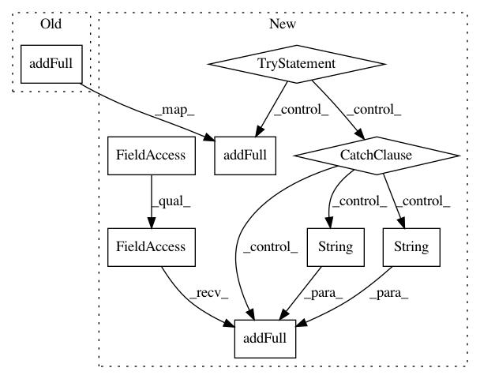

ec472ad8f8afb8b1c7cf55bb4ae19e295ac7f22e,flow/envs/base_env.py,SumoEnvironment,_reset,#SumoEnvironment#,493
Before Change
// clear vehicles from traci connection and re-introduce vehicles
// with pre-defined initial position
self.traci_connection.vehicle.remove(veh_id)
self.traci_connection.vehicle.addFull(
veh_id, route_id, typeID=str(type_id),
departLane=str(lane_index),
departPos=str(lane_pos), departSpeed=str(speed))
self.traci_connection.vehicle.setColor(
veh_id, self.colors[self.vehicles.get_state(veh_id, "type")])
// set top speed
After Change
// clear vehicles from traci connection and re-introduce vehicles
// with pre-defined initial position
try:
self.traci_connection.vehicle.remove(veh_id)
self.traci_connection.vehicle.addFull(
veh_id, route_id, typeID=str(type_id),
departLane=str(lane_index),
departPos=str(lane_pos), departSpeed=str(speed))
except:
// in case a vehicle is removed via a crash
self.traci_connection.vehicle.addFull(
veh_id, route_id, typeID=str(type_id),
departLane=str(lane_index),
departPos=str(lane_pos), departSpeed=str(speed))
self.traci_connection.vehicle.setColor(
veh_id, self.colors[self.vehicles.get_state(veh_id, "type")])
// set top speed
In pattern: SUPERPATTERN
Frequency: 3
Non-data size: 9
Instances
Project Name: flow-project/flow
Commit Name: ec472ad8f8afb8b1c7cf55bb4ae19e295ac7f22e
Time: 2017-11-02
Author: kanaadp@users.noreply.github.com
File Name: flow/envs/base_env.py
Class Name: SumoEnvironment
Method Name: _reset
Project Name: flow-project/flow
Commit Name: ba54a88068c07af00b4cb26362788ee51af319be
Time: 2017-10-12
Author: akreidieh@gmail.com
File Name: flow/envs/base_env.py
Class Name: SumoEnvironment
Method Name: _reset
Project Name: flow-project/flow
Commit Name: 07c33ef32f04297b940b306b1b587bdf1c1b0f6c
Time: 2018-03-14
Author: vinitsky.eugene@gmail.com
File Name: flow/envs/base_env.py
Class Name: Env
Method Name: _reset